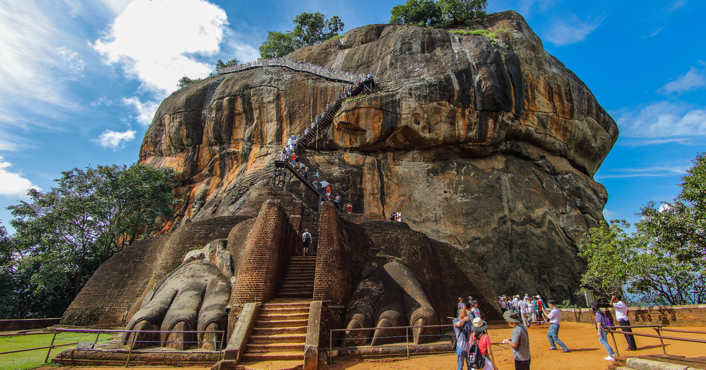
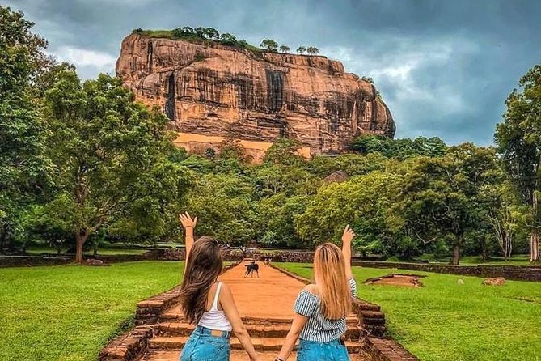
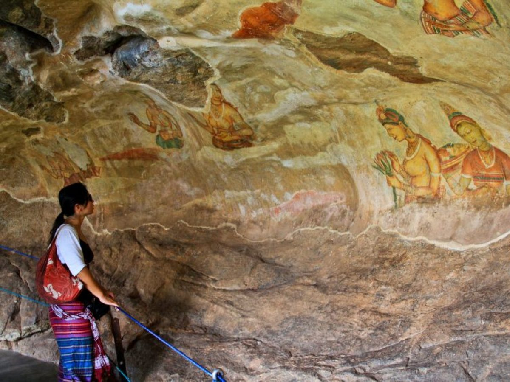
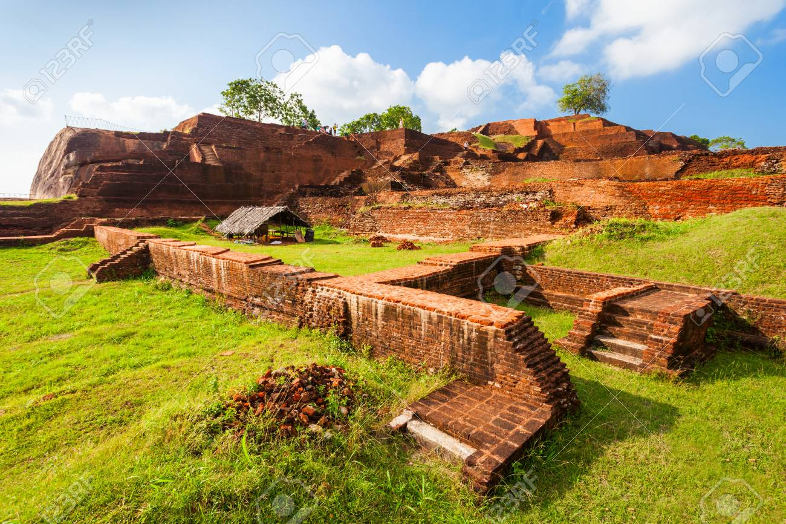
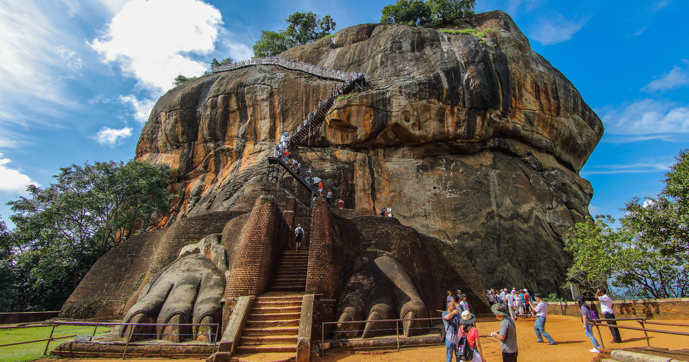
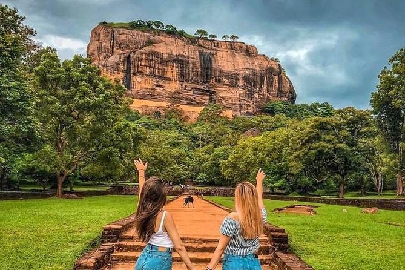
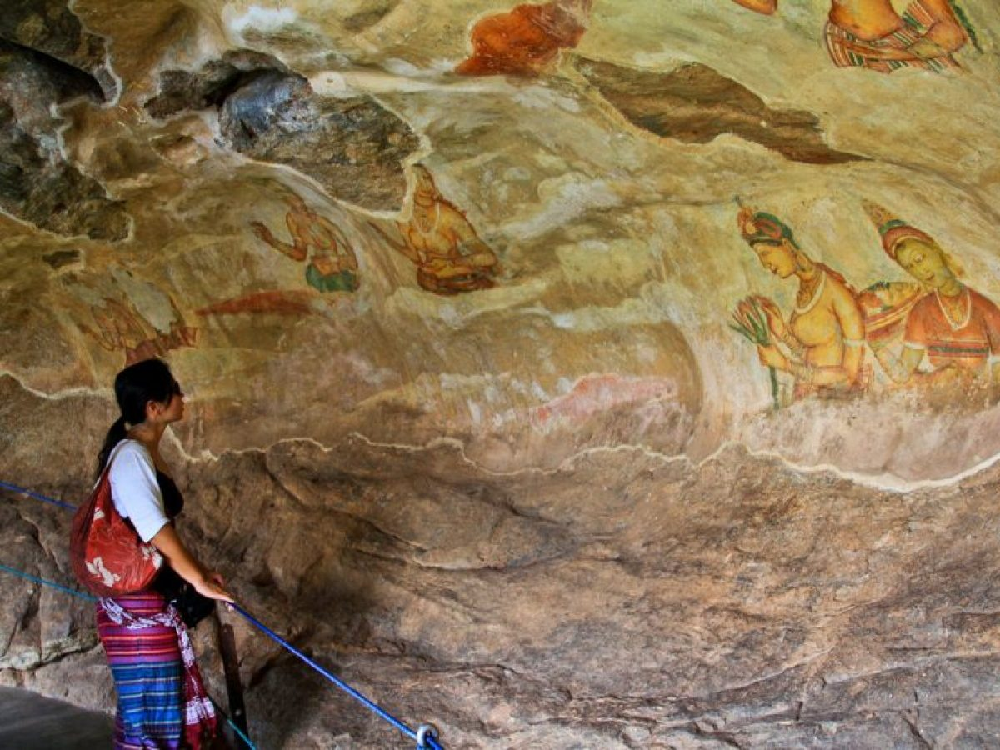
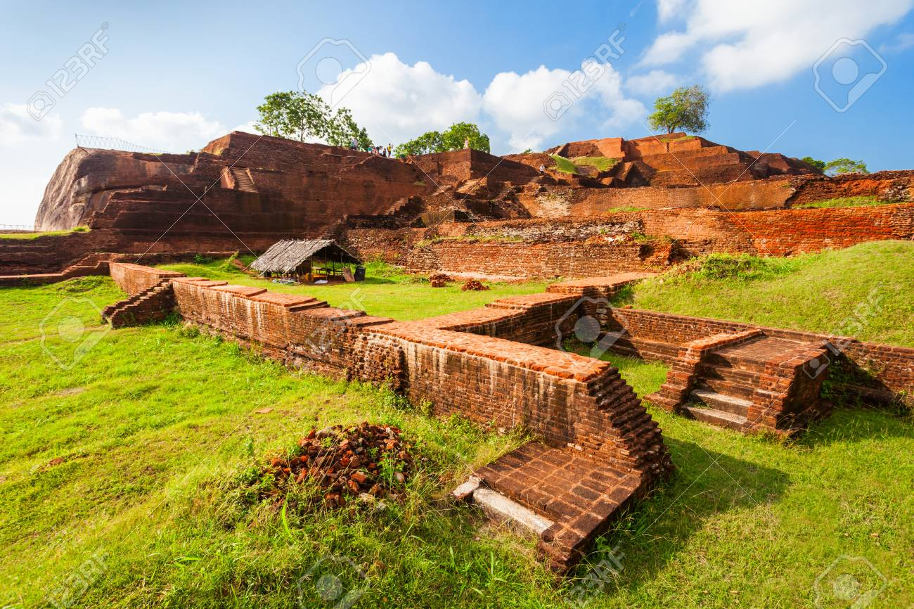

Matale
This midsize regional city at the heart of the island lies in a broad, fertile valley at an elevation of 300m. Matale is a featureless urban sprawl with a congested one-way system, so you're unlikely to want to linger long. However, the road north of town is lined with dozens of visitor-friendly spice plantations where vanilla, rubber, cinchona, jackfruit, cocoa and cardamom thrive. The area is also famous for kohila (a type of watercress) and small, mild chillies. The historical Buddhist site of Aluvihara just north of the town is also worth a visit.
Aluvihare Rock Temple
The Aluvihare Rock Temple (also called Matale Alu Viharaya) is a sacred Buddhist temple located in Aluvihare, Matale District of Sri Lanka.Surrounded by hills, the Aluvihara cave temple is situated 30 km north of Kandy on the Matale-Dambulla road. The history of Aluvihare Rock Temple is traced back to the 3rd Century B.C to the reign of King Devanampiyatissa. It is believed that the King built the dagoba, planted the Bo sapling and founded the temple after the introduction of Buddhism to the country during his reign. Aluvihare Rock Temple was the historic location where the Pāli Canon was first written down completely in text on ola (palm) leaves.Many monastery caves, some of which exhibit frescoes are situated near this temple.
In between the 100 - 89 Century BC, during the reign of King Walagamba, Sri Lanka underwent a famine known as 'Baminithiyasaya' for 12 years. There was also a South Indian invasion at the same time and the Buddhist monks of that era realized that these problems would be a danger to the existence of Buddha Sasana in the country. Under these conditions, memorizing and repeating the Dhamma (doctrine) was difficult. Due to the famine Buddhist monks did not receive sufficient alms and faced many difficulties, and they had to eat yams, roots and leaves of trees for their survival. A group of about 60 of them went to Malaya Rata, which is said to be the hilly area of the country. They managed to live on the banks of Mahaweli river under harsh conditions and survived for 12 years till the famine came to an end.


Sri Muthumariamman Thevasthanam
Muthumariamman Temple (Tamil: முத்து மாரியம்மன் கோவில்) or Arulmigu Sri Muthumari Amman Kovil is a Hindu temple in Matale, Sri Lanka. The prefix “Muthu”, literally means “pearl”. "Mari" means rain and "Amman" means mother in Tamil language.The temple is dedicated to Mariamman, the goddess of rain and fertility.
land was originally part of a paddy field and was gifted by the
owner in 1852. The current temple was built in 1874, funded by the
Nattukkottai Chettiar. This temple is used by both Hindus and
Buddhists. The temple was originally a small statue under a tree
prayed to by the Hindu people but has been developed by the people
in Matale.
More details
Dambulla Cave Temple
The world heritage site, Dambulla cave temple is a splendor to the Sri Lankan tourism. On the other hand, it is the largest persisting cave temple built on a 600 feet high rock in Sri Lanka. You will find nearly 80 documented caves in the area. It is evident that the caves were used as a prehistoric dwelling place before the arrival of Buddhism to Sri Lanka. A 2700-year-old skeleton was found within the burial site at Ibbakatuwa area, (close to the temple) during the excavations. The cave temples are cut into a granite rock boulder and drip ledge. The temple is called Dambulu gala or Rangiri Dambulu Viharaya by the locals. The cave temple was built by the King Vattagamini abhaya or King Walagamba during his escape from the throne The King had to abstain and survived from the south Indian invaders who onslaught Sri Lanka. However, King Walagmaba could regain and defeat the invaders and seized into the throne. Hence he was prompted to develop and reconstruct the cave temples. The Dambulla caves were also converted into a monastery complex. Afterward, KingVijayabahu 1 (1055-1110 AD) revamped the site and accommodated as a dwelling place for Bhikkhus. Although King Kirthi Sri Nishshankamalla (1887- 1196 AD) added several Buddha images to the cave temple. Many other kings like King Buvanekabahu (1372 -1408 AD), King Vickramabahu 3 (1360- 1374 AD) King Rajasingha 1 (1581- 1591 AD) renovated and maintained the Dambulla cave temple. Reaching the temple will be easy if you could take the Kandy- Anuradhapura A9 road.


Spice Gardens In Mathale
Spice garden had clearly been a thriving institution with the site
currently spanning to about 2.5 hectares with uncommon and vast
plantation of endemic and non-endemic varieties. Interested
travelers will have to come to Matale, Sri Lanka. It houses a
considerable collection of spice and herbal plants. First, you will
be offered a tasty cup of tea. Then you will be convinced about the
value and the use of the spices. A friendly and informative local
guide will advise you about the medicinal value of the species
highlighted on the list Sri Lanka has a long history regarding the
spice industry. Being a center for spice and relish ingredients, Sri
Lanka was renowned among many countries, mainly during the colonial
reign. Usually, Sri Lankans like to cook their meals adding
distinctive spices like pepper, cinnamon, cloves, ginger or nutmeg.
Never the less they used cinnamon, almond, Margosa, sandalwood or
Jasmine as medicinal healing ingredients or day to day needs. Thus
the Sri Lankan Ayurvedic medicine bounded with the spice and herbal
plantations, places like Ranweli spice garden preserves and
contribute to improving the industry by ensuring the rare varieties
of herbal medicines. Significantly the medicinal plants benefit to
heal skin diseases.
More details
Sigiriya
Sigiriya or Sinhagiri (Lion Rock Sinhala: සීගිරිය, Tamil: சிகிரியா, pronounced see-gi-ri-yə) is an ancient rock fortress located in the northern Matale District near the town of Dambulla in the Central Province, Sri Lanka. The name refers to a site of historical and archaeological significance that is dominated by a massive column of rock nearly 200 metres (660 ft) high. According to the ancient Sri Lankan chronicle the Culavamsa, this site was selected by King Kashyapa (477 – 495 AD) for his new capital. He built his palace on the top of this rock and decorated its sides with colourful frescoes. On a small plateau about halfway up the side of this rock he built a gateway in the form of an enormous lion. The name of this place is derived from this structure — Sīnhāgiri, the Lion Rock (an etymology similar to Sinhapura, the Sanskrit name of Singapore, the Lion City). The capital and the royal palace was abandoned after the king's death. It was used as a Buddhist monastery until the 14th century. Sigiriya today is a UNESCO listed World Heritage Site. It is one of the best preserved examples of ancient urban planning. Lal Srinivas and Mirando Obesekara described Sigiriya as a post-historical archeology turning point of Ravana. According to them, Sigiriya may be the Alakamandava (City of the Gods) that was built up before 50 centuries ago by King Kuvera who was the half-brother of Ravana (Ravan) as described in the Ramayanaya.
 









Pidurangala Rock
Pidurangala rock fortress located close to the Sigiriya rock
fortress is a rock with ancient forest monastery in Dambulla, Sri
Lanka. The Pidurangla rock with the monastery has a strong
connection between the Sigiriya. The Pidurangala monastery complex
is the place where King Kashyapa (477-495 AC) worshiped and used to
relocate the monks dwelled at Sigiriya. Yet King Kashyapa wanted to
build his royal capital at Sigiriya the lower levels of the rock
fortress were used by the Sangha to follow contemplation. Therefore
the caves adjoined with the site area are formerly used by the monks
for meditations. Pidurangala monastery was distinguished as a
well-civilized site too. The Brahmin inscriptions found at the
complex say that the viharaya was established as a ‘Panchavasa’
style Hermitage (comprised of 5 major ritual buildings). Moreover,
you will find the inscriptions done made by King kashyapa. You can
visit old dagoba, chapter house (dwelling place of bhikkus),
Bodhigara (bo tree chamber), Preaching wall, image house and ruins
of the archeological site. Hence the pirivena of the temple was
accommodated by 500 bhikkus. The old monastery was called as
Uppalavanna kashyapa Giri viharaya. A flight of steps located on the
right-hand side from the cave temple will take you up t the summit
and here you will see a 48 feet recumbent Buddha statue in an
elongated ancient cave.
More details
Nalanda Gedige, Matale
Nalanda Gedige ( sinhala:නාලන්දා ගෙඩිගේ ) ( Tamil: நாலந்த கெடிகே; Nālanda Gedige ) is an ancient complete stone temple near Matale, Sri Lanka and its original site was considered as the center of Sri Lanka. The building was constructed in between 8th and 10th centuries with dravidian architecture in( Pallava style )and is believed to have been used by Buddhists. Also some scholars describe this building is a dravidian architecture dedicated to a Mahayanaa cult with pronounced Trantric learning and known for an ancient monument of possible Vajrayana (Tantric) Buddhist affinities. Nalanda Gedige is designed on the lines of a Hindu temple with a mandapa, an entrance hall (originally roofed), a short passage to a bare cello, and an ambulatory round the holy center. A limited number of the original Hindu deity statuettes exist within the temple, however, a statue of the God Kubera appears on the south side of the tympanum over the sanctuary, a feature that can only be seen in Sri Lanka. The richly decorated facade sections, laboriously reassembled in 1975, are predominantly in the South Indian style. Although they cannot be precisely dated, they are believed to have originated sometime between the 8 to 11th centuries.


Knuckles Mountain Range
The Knuckles forest conservation which expands over Matale and Kandy
district is under control of the Department of forest conservation.
It is believed that the name ‘knuckles’ was assigned by the
British surveyors. The mountain range gets this name as it appears
like a clenched fist at a distance. Absolutely the wonderful scenery
viewed from the distance is breathtakingly mysterious. Hence it is a
refreshing change from the hot climatic experience in Colombo. This
is the best place to relax on the way and definitely, it will blow
you away. The mist enveloped the peaks of the mountains seems like a
heaven in the forest. The forest houses to a cluster of exclusive
flora and fauna which has a great geographical value. Knuckle’s
mountain range is comprised with steep slopes, thick cloud capped
hill peaks, cool streams, and high cascades. (December and January
are the rainy seasons- streams get filled to the Brinks) This eco
tourism paradise covers an area about 155 sq km. Yet the mountain
range is an ideal place for hiking, mountain biking, and adventure
trips. The Knuckles Mountains is well known as ‘Dumbara kandu
wetiya’ among local people. Due to the high elevation, you will
have to get ready to experience a cold but cushy. But you may have
to adopt various climatic conditions of Sri lanka within the
mountain area. Further, it is a good place for environmental
enthusiasts to visit traditional small mountain houses. Though the
area was called ‘Giri Divaina’ and as ‘Malaya rata’ recently
used and accommodated by the ancient ‘Yaksha’ tribes.
More details
Bambarakiri Ella
This magnificent waterfall is situated close to Rattota town in Matale District. Take Matale – Ilukumbura road to the Bamarakiri Falls bend, which is 1km past Rattota town, where the fall is to be found. The Bambarakiri Falls is 18km from Matale town.The fall is set amidst the mesmerizing greenery of the Knuckles mountain range. Bambarakiri Ella is a fall of 10m. The fall can be viewed in three parts. Different varieties of butterflies and birds come to the area of the falls mostly in clear mornings making the view even more charming. A very old-fashioned suspension bridge extends over the falls adding an enchanting touch to the already beautiful scene.Gallons of water come crashing down to earth at a high speed. The rock pool at the base of the waterfall is safe for a dip during the dry summer, but can be very dangerous during heavy rainy season. For those who yearn for more adventure, there is a steep slippery climb of 5km, to reach the top of the waterfall. But one should bear in mind that a slight mistake will result in grave injury. Although the climb is not easy and should be done with care, the views of the landscape from the top are breathtaking. In addition, there is a wonderful bonus for those that make the effort of the climb – a cool and crystal clear natural rock pool perfect for bathing. This tranquil and peaceful place is indeed a hidden gem in Matale. Visitors who come to the areas in Matale for holidays are strongly recommended to visit this beautiful place.